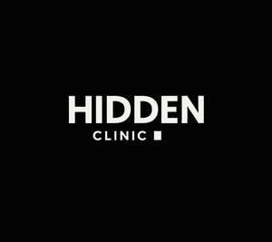

Trade Mark Journal No.2025/022 30 May 2025
UK00004203046 13 May 2025 (3,44)

- Class 3
- Cosmetics; Skincare cosmetics; Moisturisers [cosmetics]; Cosmetics and cosmetic preparations; Hair cosmetics; Skin fresheners [cosmetics]; Cosmetics for eye-lashes; Cosmetics for suntanning; Anti-aging moisturizers used as cosmetics; Organic cosmetics; Non-medicated cosmetics; Nail cosmetics; Lip cosmetics; Skin moisturizers used as cosmetics; Mousses [cosmetics]; Natural cosmetics; Cosmetics preparations; Make-up palettes containing cosmetics; Tanning gels [cosmetics]; Tanning oils [cosmetics]; Cosmetics in the form of lotions; Facial creams [cosmetics]; Beauty care cosmetics; Self-tanning preparations [cosmetics]; Colour cosmetics; Suncare lotions [for cosmetic use]; Cosmetics for animals; Eyebrow cosmetics; Tanning preparations [cosmetics]; Decorative cosmetics; Multifunctional cosmetics; Milks [cosmetics]; Eye cosmetics; Body creams [cosmetics]; After-sun oils [cosmetics]; Skin masks [cosmetics]; Tanning milks [cosmetics]; Cosmetics for eye-brows; Functional cosmetics; Suntan oils [cosmetics]; Facial gels [cosmetics]; Skin care cosmetics; Cosmetics for children; Suntan lotion [cosmetics]; Fluid creams [cosmetics]; Non-medicated cosmetics and toiletry preparations; Humectant preparations [cosmetics]; Emollient preparations [cosmetics]; Cosmetics in the form of creams; Powder compacts [cosmetics]; Sun-tanning preparations [cosmetics]; Colour cosmetics for the skin; Cosmetic hair lotions; Suntanning oil [cosmetics]; After-sun milks [cosmetics]; After-sun milk [cosmetics]; Cosmetics for use on the skin; Cosmetic moisturisers; Sunscreens [for cosmetic use]; Bath powder [cosmetics]; Cosmetic creams and lotions; Night creams [cosmetics]; Cosmetic products in the form of aerosols for skincare; Skin recovery creams [cosmetics]; Body gels [cosmetics]; Cosmetics for the use on the hair; Sun blocking lipsticks [cosmetics]; Body and facial creams [cosmetics]; Sunscreen [for cosmetic use]; Sunscreen creams [for cosmetic use]; Lip stains [cosmetics]; Body care cosmetics; Creams (Cosmetic -); Cosmetic creams; Cosmetic soaps; Cosmetics in the form of powders; Hair care lotions [for cosmetic use]; Cosmetics containing keratin; Cosmetic skin fresheners; Dyes (Cosmetic -); Cosmetic dyes; Cosmetics in the form of oils; After-sun lotions [for cosmetic use]; Cosmetics containing panthenol; Beauty lotions; Cosmetic facial lotions; Facial lotions [cosmetic]; Nail paint [cosmetics]; Cosmetic suntan lotions; Nail hardeners [cosmetics]; Skin care lotions [cosmetic]; Perfume oils for the manufacture of cosmetic preparations; Colour cosmetics for children; Tissues impregnated with cosmetics; Anti-aging creams [for cosmetic use]; Nail tips [cosmetics]; Nail primer [cosmetics]; Sun protecting creams [cosmetics]; Smoothing emulsions [cosmetics]; Cosmetic products for the shower; Skin cleansers [cosmetic]; Perfumed powders [for cosmetic use]; Liners [cosmetics] for the eyes; Moisturising skin lotions [cosmetic]; Cosmetic creams for the skin; Skin creams [cosmetic]; Skin creams [for cosmetic use]; Body and facial gels [cosmetics]; Skin balms [cosmetic].
- Class 44
- Cosmetic make-up services; Medical tele-reporting [medical services]; Medical care; Medical nursing; Nursing, medical; Medical and healthcare clinics; Clinics (Medical -); Medical clinics; Medical and healthcare services; Medical counseling; Medical services; Medical examination; Medical examinations; Medical assistance; Health clinic services [medical]; Medical nursing services; Nursing services (Medical -); Medical counselling; Medical clinic services; Clinic (Medical -) services; Clinic services (Medical -); Ambulant medical care; Medical diagnostic services; Medical consultations; Medical treatment services; Medical testing; Medical care services; Medical consultation; Medical information; Medical screening; Medical imaging services; Remote monitoring of medical data for medical diagnosis and treatment; Medical services in the field of diabetes; Emergency medical assistance; Health resort services [medical]; Rental of medical and health care equipment; Medical assistance consultancy provided by doctors and other specialized medical personnel; Medical services in the field of nephrology; Medical counseling services; Medical health assessment services; Provision of medical treatment; Dietetic counselling services [medical]; Arranging of medical treatment; Medical advice in the field of pregnancy; Emergency assistance services in the medical field; Health farm services [medical]; Medical examination of individuals; Medical care of feet; Providing medical support in the monitoring of patients receiving medical treatments; Medical evaluation services; Mobile medical clinic services; Medical services in the field of oncology.
Xhuljon Gashi